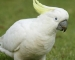

Cacatúas (Cacatuidae)
Habitat y Caracteristicas
Las cacatúas son las veintiuna especies de aves psitaciformes que pertenecen a la familia Cacatuidae, la única familia de la superfamilia Cacatuoidea. Junto a las superfamilias Psittacoidea (loros verdaderos)
Las cacatúas ocupan una gran cantidad de hábitats desde los bosques de las regiones subalpinas a los manglares. Sin embargo ninguna especie se encuentra en todos ellos. A menudo son voladores rápidos que realizan grandes desplazamientos, siendo nómadas. Hay bandadas que se desplazan por grandes áreas del interior australiano, en busca de semillas con las que alimentarse, y de otros recursos alimenticios. Las sequías pueden forzar a las bandadas de las zonas más áridas a desplazarse más allá de las zonas de cultivo.
- Las cacatúas se alimentan versátilmente y consumen una gran variedad de alimentos principalmente de origen vegetal. Las semillas forman parte de la dieta de todas las especies y las pueden abrir con sus grandes y fuertes picos.
- Las cacatúas son diurnas, y necesitan la luz del día para encontrar su alimento. No son de los primeros madrugadores, sino que esperan hasta que el sol caliente sus lugares de descanso para empezar a alimentarse.
- Las cacatúas son monógamas y sus lazos de pareja pueden durar muchos años. Muchas de ellas se emparejan en sus bandadas antes de alcanzar la madurez sexual, y no crían hasta por lo menos un año después.
- Las vocalizaciones de las cacatúas son altas y chillonas.Les sirven para varias funciones, como permitirles reconocerse entre sí, indicar los estados de ánimo, mantener la cohesión de las bandadas y de advertencia cuando defienden el nido.
- La muda del plumaje es muy lenta y compleja. Las cacatúas negras parecen sustituir las plumas de vuelo de una en una, durando su muda completa dos años.
Regresar al Menu